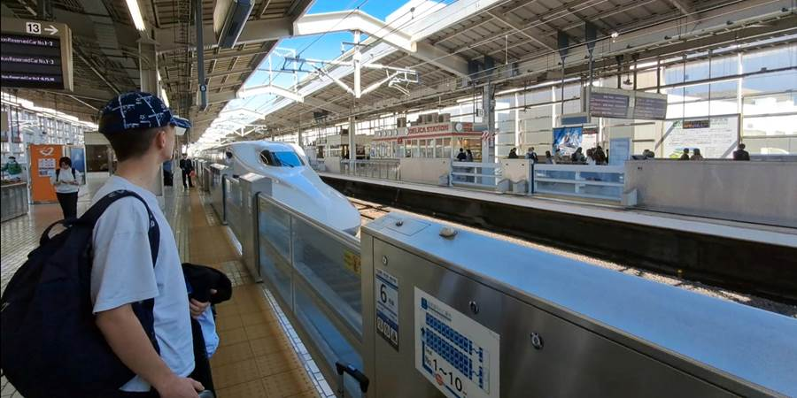
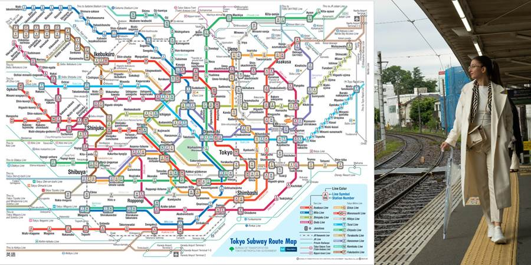
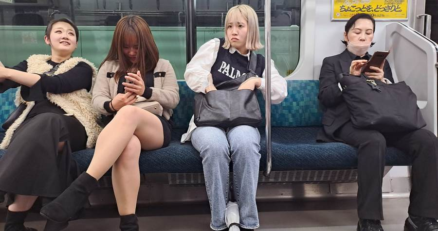
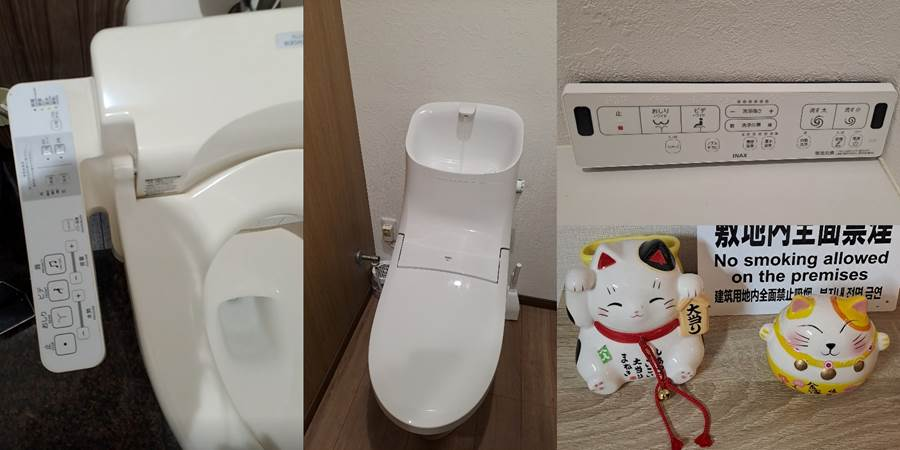
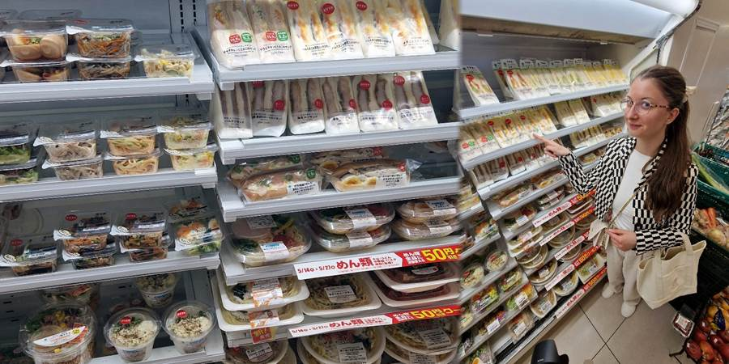
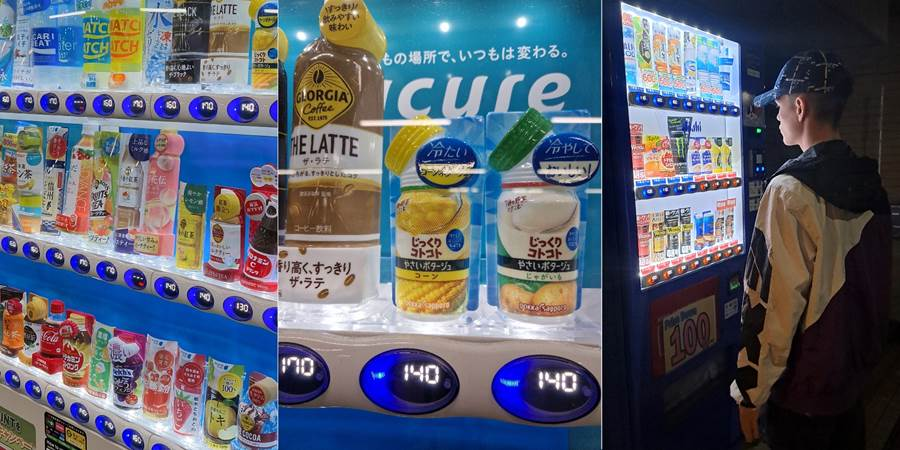
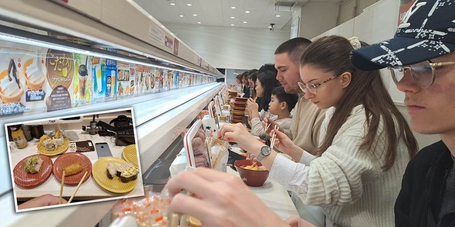
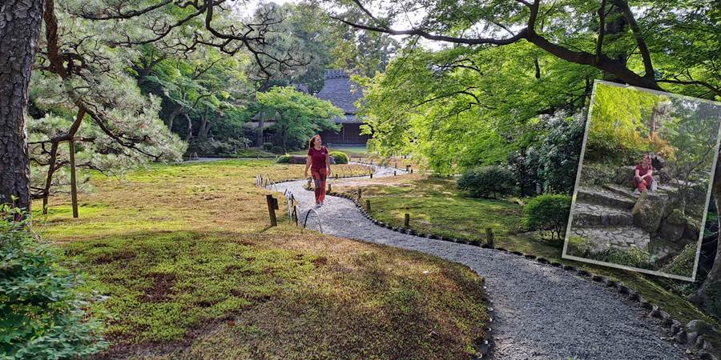
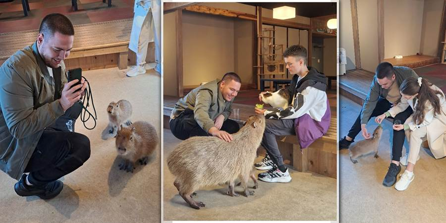
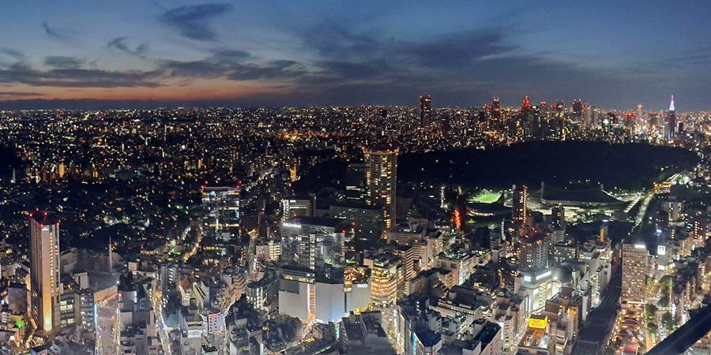

Japan je zemlja u kojoj sve funkcioniše, ali tek kada znate male trikove, putovanje postaje potpuno bez stresa. Šta znati pre puta u Japan? Obično su tekstovi tipa Top 10 saveta, međutim Japan je toliko drugačiji pa ga često zovu i drugi svet, da sam ih jedva sažela u dvadesetak. Stižu vam saveti za Japan iz prve ruke.
Logistika i transport
Avion vs. Šinkansen
Prevoz Osaka - Tokio vam je jeftiniji avion od šinkansena. U našem slučaju, šinkansen je bio oko 100 €, a avion oko 30 €. Bonus, vidite Fuji iz aviona.

Prevoz taksijem i Uberom
Taksi može da se pozove i na ulici dizanjem ruke. Radi i Uber, što je zgodno da proverite unapred cene. Tokio je dobro povezan metroima i vozovima (u kojima se ćuti, nije pristojno pričati) i razdaljine su velike ali u Kjotu ga je vrlo zgodno koristiti. Manje su razdaljine, svašta ima da se vidi, da ne gubite vreme čekajući autobuse, pogotovo ako vas je više, bude povoljnije.


IC kartice (Suica/Pasmo)
Ako neko ne želi da nosi keš za prevoz, Apple Wallet ili Google Pay dozvoljavaju dodavanje digitalne Suica kartice koju dopunjavaš svojom karticom sa telefona. Radi i u mnogim prodavnicama!
Takkyubin (slanje prtljaga)
Usluge poput Yamato Transport šalju kofere iz hotela u hotel za oko 15-20 evra. Preporodićete se bez prtljaga u prevozu.
Novac i tehnologija
Tehnologija cveta, ali keš još uvek vlada
Neki hramovi i prodavnice naplaćuju isključivo kešom. Keš nosite uvek sa sobom. Dizala sam ga po potrebi na bankomatima 7-Eleven. U Nikku za ulazak u hramove treba keš a nisam videla ATM u blizini.
Tax Free
Nosite pasoš sa sobom (što i inače radite) jer u nekim prodavnicama kao Don Kihote (čuvene prodavnice na nekoliko spratova za suvenire, kozmetiku...) imate pravo na povrat poreza ako imate pasoš uz sebe.
Power bank u hitnim situacijama
Ako vam se isprazni baterija na telefonu a žarko želite još da slikate, ili vam je telefon neophodan za snalaženje, power bank možete iznajmiti u 7-Eleven prodavnicama i vratiti u neku sledeću. Jako zgodna opcija. Mi npr. nismo imali odgovarajući utikač i prvu noć nismo mogli da napunimo telefone... Dobro proverite kakav vam utikač treba. Mi smo poneli neki svemogući sa svim utikačima osim potrebnog.
Smeštaj
Sex hoteli
Budite obazrivi sa bookingom. Trebao nam je smeštaj na jednu noć pred avion u Tokiju. Nije bilo lako naći. Obradovala sam se kad sam pronašla, pa još i povoljan. U komentarima tada nije pisalo da je sex hotel u pitanju, a ja sam i decu odvela.
Toaleti
U toaletu imate gomilu dugmića. Za grejanje daske, smer i jačinu mlaza za pranje, pa i dugme za šuštanje ili muziku da sakrije vaše prirodne zvuke.

Hrana i bonton
Kombini
Sasvim pristojno možete jesti i kuvanu hranu, povoljno, u kombinijima, prodavnicama koje rade 24h i na svakom su ćošku. U 7-eleven kupite smrznuto povrće i na licu mesta napravite sebi smuti. Tu imate i raznih sendviča ako baš niste za suši, tempuru, ramen. U Lawsonu odaberite pohovanu piletinu ...

Vending mašine
Ne možete ostati ni žedni jer su vending mašine na svakom koraku. Videla sam vlog sa vending mašinama sa prljavim ženskim vešom, ali mi nismo naišli na njih.

Restorani
Restorani sa pokretnim trakama su povoljni. Porcije su male pa možete svašta probati. Naručuje se na tabletu. Iako vidite red kad uđete, neka vas to ne obeshrabri, brzo ćete stići na red.

Rezervacije za restorane
Za popularna mesta, Google Maps "Reserve" opcija ili Tabelog su postali skoro neophodni.
Javni bonton
Nemojte jesti ni piti na ulici dok hodate. Ako stojite, to je u redu, pogotovo pored prodavnice gde ste kupili. Bakšiš ne primaju, nemojte da im činite neprijatnost. Duvanje nosa je nepristojno ali je šmrckanje sasvim u redu.
Đubre i reciklaža
Kanti za đubre na ulicama nema, ponesite u čemu ćete nositi ambalažu (ranac). Kanti ima u prodavnicama 7-Eleven, možete tamo ponešto baciti.
Par reči na japanskom
Otvara mnoga vrata, čak i jednostavno “hvala” i “izvinite” mnogo znači.
Planiranje i atrakcije
Proverite radno vreme
Savet broj jedan je da svemu proverite radno vreme pa i besplatnim parkovima jer ih zaključavaju posle 17h. Kapibare npr. odmaraju tri dana u nedelji i samo preostale rade i sl.


Izlet u Nikko
Dvoumila sam se, ali sada mi je drago što nisam odustala, iako je oko 2 sata vožnje od Tokija. Vredi.
Fuji je vrlo stidljiv
Češće se ne vidi od oblaka nego što se vidi. Imate sajtove gde se prati kakva će biti vidljivost, kamere da vidite kako je trenutno...
Tokyo Skytree vidikovac
Ako želite da budete na vidikovcu za zalazak sunca a karte se rasprodaju za par sekundi u ponoć 4 nedelje ranije, kupite prvi sledeći termin (na internetu proverite taj dan kada će biti zalazak) i dođite u prethodni termin. Nas je automat koji očitava bar-kod na kartama pustio.

👉 Detaljnije o Tokyo Skytree vidikovcuUlaznice
Kupujte još kod kuće. Ne dozvolite da vam se rasprodaju.
Pešačenje
Na klupe ćete jako retko naići, na stepenicama robnih kuća piše "Do not sit", tako da pripremite se na višečasovno hodanje i stajanje do prvog restorana. Udobna obuća i uživajte.
💰 Brzi pregled troškova u Japanu
Kafa: 2–4 €
Obrok u restoranu: 7–15 €
Metro: 1–3 € po vožnji
Kombini obrok: 3–6 €
Ulaznice za atrakcije: 5–20 €
Najbolje vreme za odlazak u Japan su proleće i jesen. Srećan put!
Reportaža na Travel advisoru